Diocese of Bridgeport · Bethel, Connecticut
A primeira paróquia brasileira oficial nos Estados Unidos em homenagem à padroeira do Brasil. Uma comunidade de fé vibrante com mais de 1.100 famílias registradas. The first official Brazilian parish in the United States named after Brazil's patron saint. A vibrant community of faith with over 1,100 registered families.
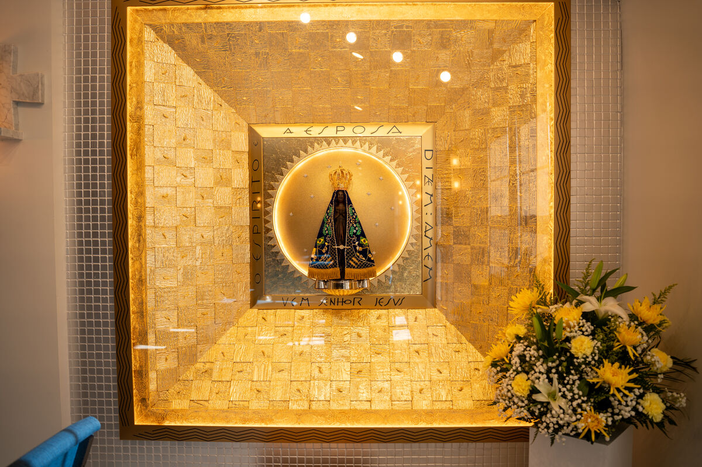
Nossa Padroeira Our Patroness
Nossa Senhora Aparecida é a Padroeira do Brasil. Em 1717, pescadores retiraram do Rio Paraíba uma pequena imagem escura da Imaculada Conceição, e a devoção a ela só cresceu desde então. Como a primeira paróquia oficialmente brasileira nos Estados Unidos, trazemos essa devoção para Bethel. Our Lady of Aparecida is the Patroness of Brazil. In 1717, fishermen on the Paraíba River drew a small dark statue of the Immaculate Conception from the water, and devotion to her has grown ever since. As the first official Brazilian parish in the United States, we carry that devotion home to Bethel.
Vida Paroquial Parish Life
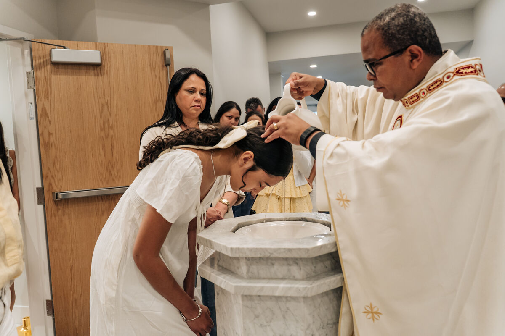
Sacramento
Batismo, Primeira Comunhão, Crisma, Matrimônio e Unção dos Enfermos. Preparação sacramental disponível durante todo o ano. Baptism, First Communion, Confirmation, Marriage, and Anointing of the Sick. Sacramental preparation available year-round.
Saiba mais Learn more →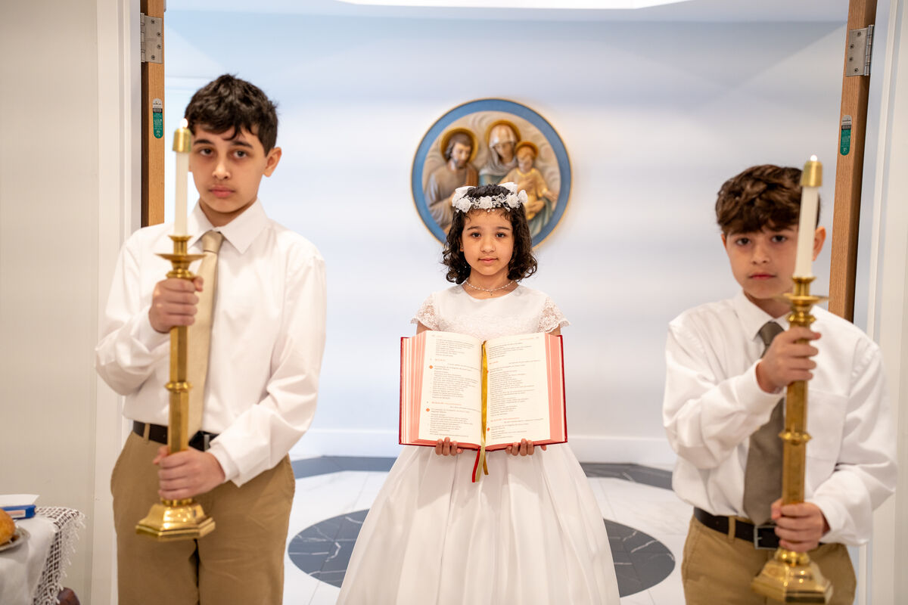
Catequese
Catequese para crianças, jovens e adultos. Mais de 200 crianças e 40 adultos em RCIA. Crescendo na fé por meio da oração. Religious education for children, youth, and adults. Over 200 children and 40 adults in RCIA. Growing in faith through prayer.
Saiba mais Learn more →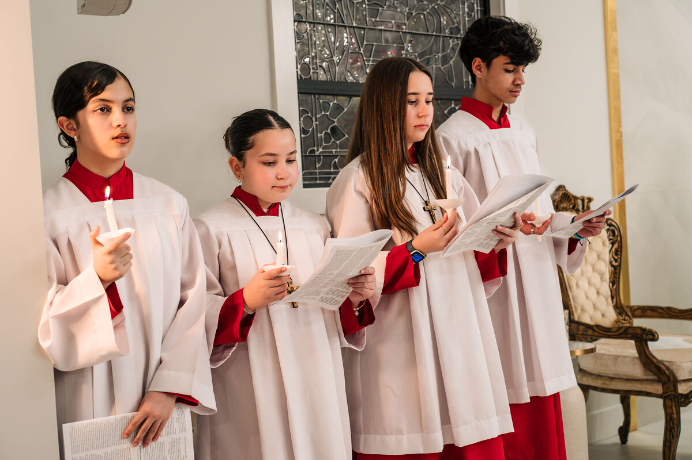
Ministérios Ministries
Oportunidades para servir, participar e crescer na comunidade paroquial. Desde jovens até idosos, há lugar para todos. Opportunities to serve, participate, and grow in the parish community. From youth to seniors, there is a place for everyone.
Ver todos View all →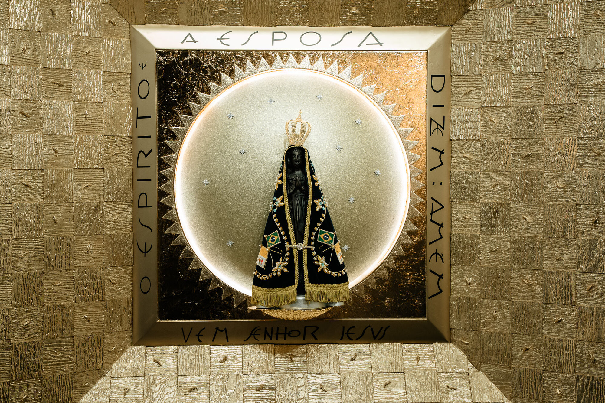
Sobre a Paróquia About Our Parish
Por mais de 27 anos, Nossa Senhora Aparecida tem sido uma comunidade católica brasileira-americana de fé. Estabelecida como paróquia independente em 2020 após quase duas décadas como quase-paróquia sob São Pedro, a comunidade se expandiu para um novo local em Bethel, permitindo maior alcance pastoral e formação religiosa. For more than 27 years, Our Lady of Aparecida has been a Brazilian-American Catholic community of faith. Established as an independent parish in 2020 after nearly two decades as a quasi-parish under St. Peter's, the community has expanded to a new location in Bethel, allowing for greater pastoral outreach and religious formation.
Sob a liderança do Pe. Leonel Medeiros, Vigário Episcopal para Católicos Brasileiros, a paróquia promove o desenvolvimento da fé por meio de 28 ministérios ativos, retiros, preparação sacramental e programas para jovens. Under the leadership of Fr. Leonel Medeiros, Episcopal Vicar for Brazilian Catholics, the parish fosters faith development through 28 active ministries, retreats, sacramental preparation, and youth programs.
Galeria Gallery
Momentos da vida da nossa comunidade — sacramentos, eventos, e o encontro dos paroquianos. Moments from the life of our community — sacraments, events, and our parishioners gathered together.
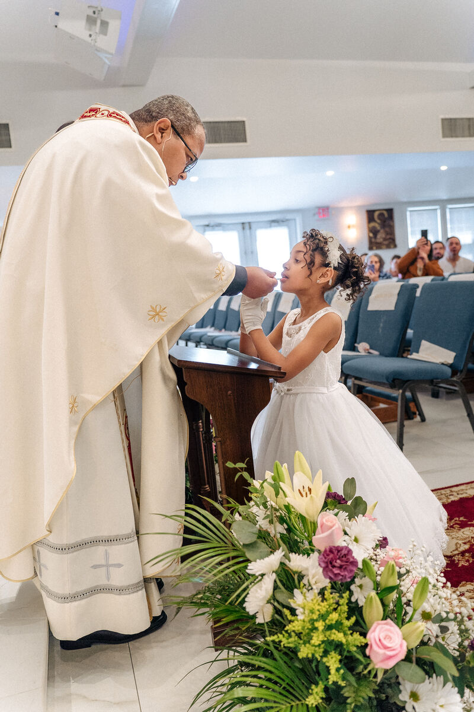
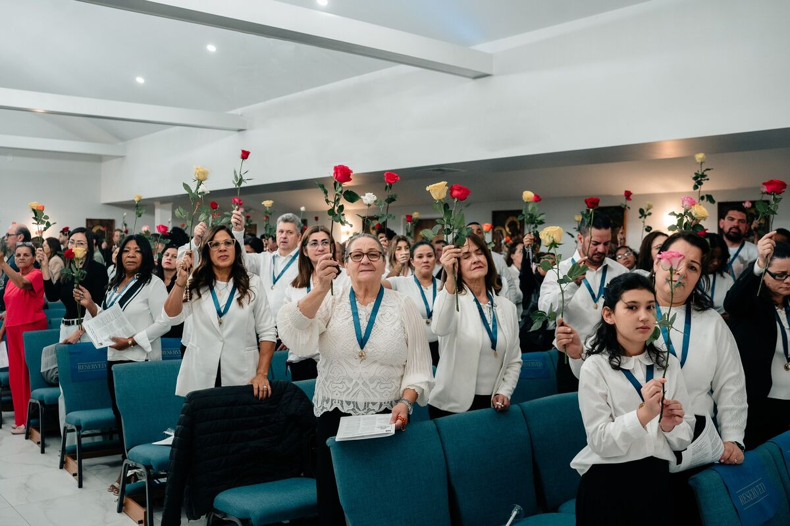
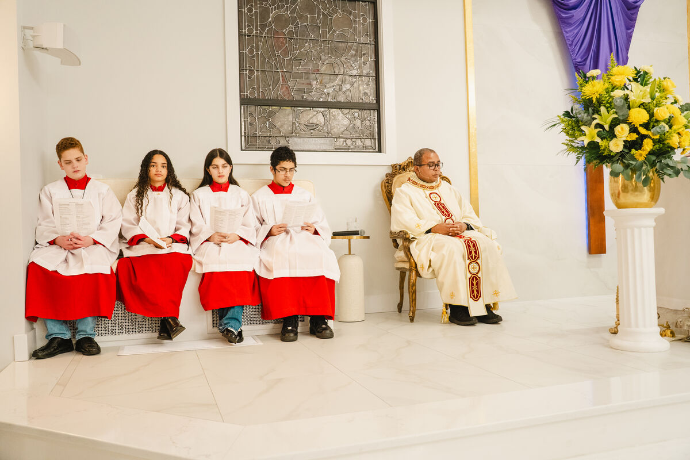
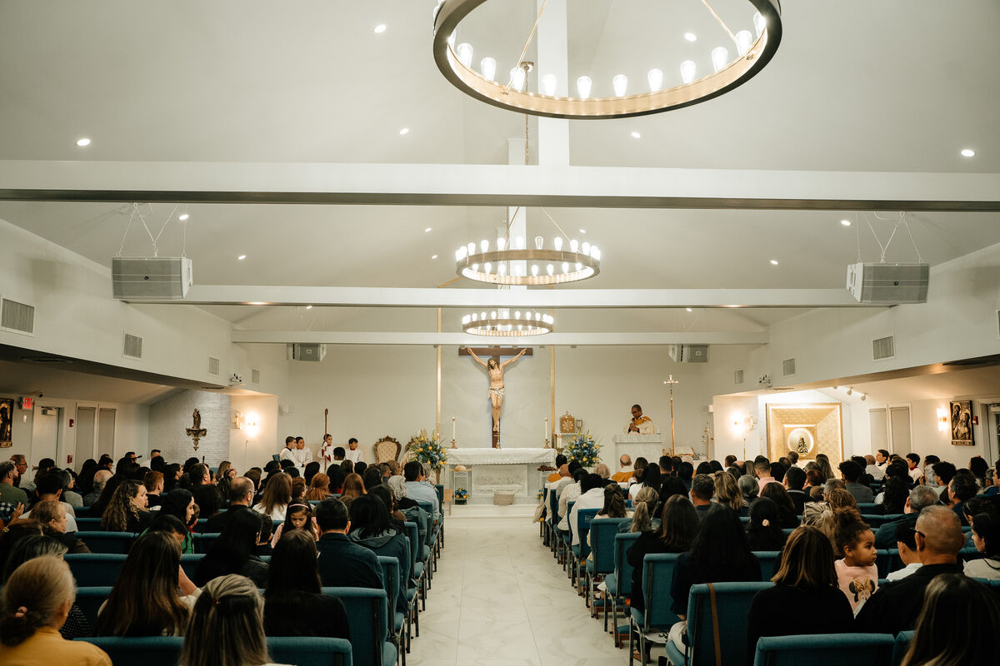
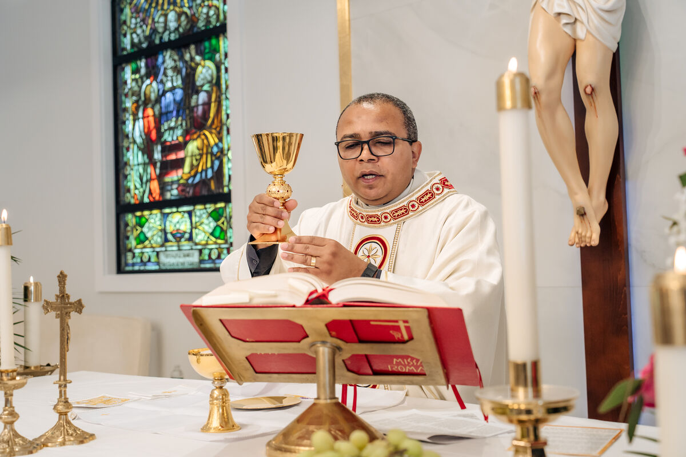
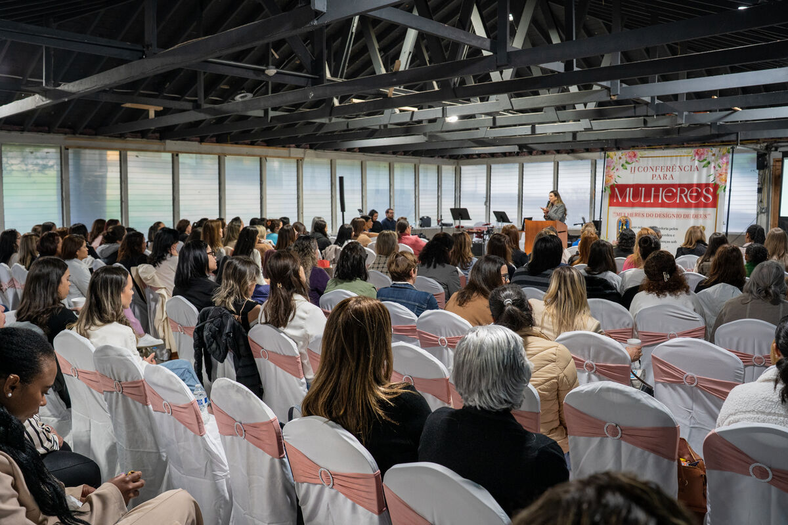
Venha Rezar Conosco Come Pray With Us
| DiaDay | HorárioTime | IdiomaLanguage |
|---|---|---|
| SábadoSaturday | 5:00 PM | Português |
| 7:00 PM | Português | |
| DomingoSunday | 7:30 AM | Português |
| 9:30 AM | Português | |
| 11:30 AM | English | |
| 6:00 PM | Português |
Sábados das 3:30 às 4:30 PM com Pe. Leonel. Todos os sábados entre este horário. Saturdays from 3:30 to 4:30 PM with Fr. Leonel. Every Saturday during this time.
Saiba Mais Learn MoreApoie nossa paróquia com sua contribuição. Dízimo online seguro e conveniente. Support our parish with your contribution. Secure and convenient online tithing.
Contribuir Agora Give NowEventos Events
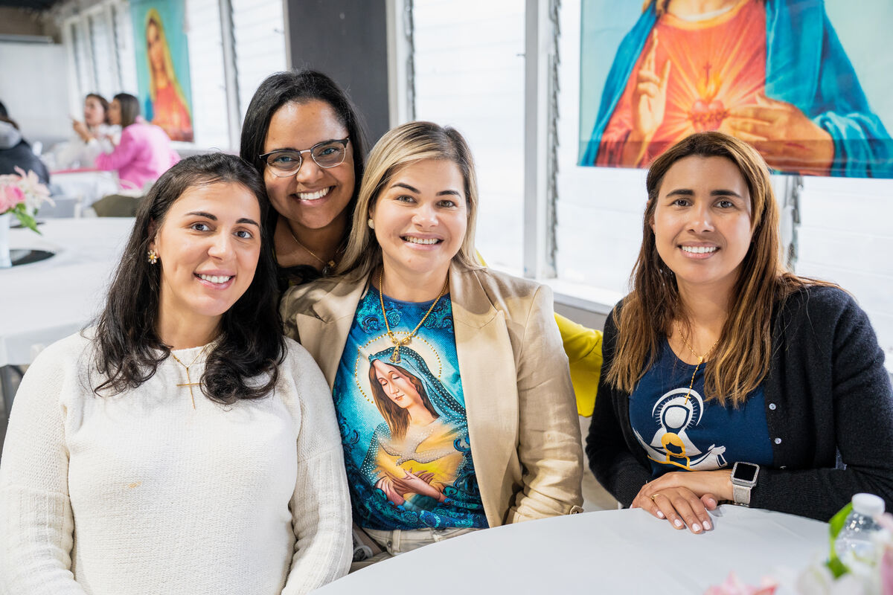
Ao longo do ano celebramos a vida em comunidade — retiros de família, conferências, festas litúrgicas e encontros pastorais. Cada evento é um convite para crescer juntos na fé. Throughout the year we celebrate life as a community — family retreats, conferences, liturgical feasts, and pastoral gatherings. Each event is an invitation to grow together in faith.
Confira nossos próximos eventos e venha participar. Check back here for upcoming events and come be part of the celebration.
Pastorais & Movimentos Ministries & Movements
Encontre o seu lugar na comunidade. Com 28 ministérios ativos, há oportunidades para todos. Find your place in the community. With 28 active ministries, there are opportunities for everyone.
Nossa paróquia está totalmente comprometida com a Carta da USCCB para a Proteção de Crianças e Jovens. Todo o clero, pessoal e voluntários são certificados pelo VIRTUS. Our parish is fully committed to the USCCB Charter for the Protection of Children and Young People. All clergy, staff, and volunteers are VIRTUS-certified.
Para reportar abuso suspeito: ligue para (203) 650-3265 (Erin Neil, Diocese de Bridgeport) ou, em caso de emergência, ligue 911. To report suspected abuse: call (203) 650-3265 (Erin Neil, Diocese of Bridgeport) or, in an emergency, call 911.
Fale Conosco Get In Touch